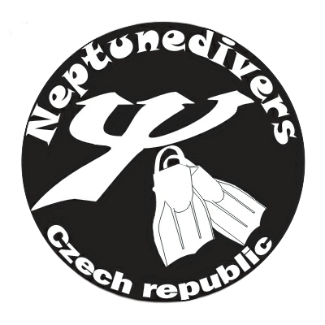

O nás
PŘIJĎTE MEZI NÁS
Celý rok se bavíme na potápěčských akcích. Na expedicích objevujeme a prozkoumáváme nová místa. Vracíme se na lokality, kde to máme rádi. Pořádáme bazénové tréninky vhodné pro osvěžení dovedností a testování výstroje.
PŘIPOJIT SE MŮŽE KAŽDÝ
Nevybíráme žádné poplatky za členství. Nejvyšší odměnou pro nás je, když své zážitky máme s kým sdílet.
Celý rok se bavíme na potápěčských akcích. Na expedicích objevujeme a prozkoumáváme nová místa. Vracíme se na lokality, kde to máme rádi. Pořádáme bazénové tréninky vhodné pro osvěžení dovedností a testování výstroje.
PŘIPOJIT SE MŮŽE KAŽDÝ
Nevybíráme žádné poplatky za členství. Nejvyšší odměnou pro nás je, když své zážitky máme s kým sdílet.
